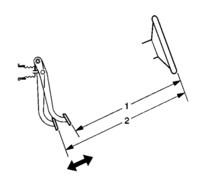

Medición y comprobación del recorrido del pedal del freno
Herramientas especiales
CH-28662 Indicador de esfuerzo del pedal del freno
Si desea informarse sobre herramientas regionales equivalentes, consultar Herramientas especiales .
- Con el encendido en OFF y los frenos fríos, presione los frenos 3-5 veces, o hasta que el pedal del freno esté firme, para reducir la reserva del servofreno.
- Monte el indicador CH-28662 en el pedal de freno.

- Mida y registre la distancia (1) del pedal del freno al borde del volante; anote los puntos de medición.
- Aplique y mantenga aplicados los frenos con 445 N (100 lib.) de fuerza al pedal del freno, como se indica en el indicador CH-28662.
- Mientras mantiene 445 N (100 lib.) de fuerza al pedal del freno, mida y registre la distancia (2) desde el mismo punto en el pedal del freno al mismo punto en el borde del volante.
- Suelte los frenos y repita los pasos 3 y 4 para obtener una segunda medición. Después de obtener una segunda medición, siga con el paso 6.
- Haga una media de la primera y la segunda medición registrada durante las dos aplicaciones de los frenos.
- Reste la medición inicial, sin aplicar (1), a la media de la medición aplicada (2) para obtener la distancia del recorrido del pedal del freno.
- Máximo recorrido del pedal del freno (medido con el encendido desconectado, la asistencia del servofreno agotada y los frenos fríos).
| © Copyright Chevrolet. Reservados todos los derechos |